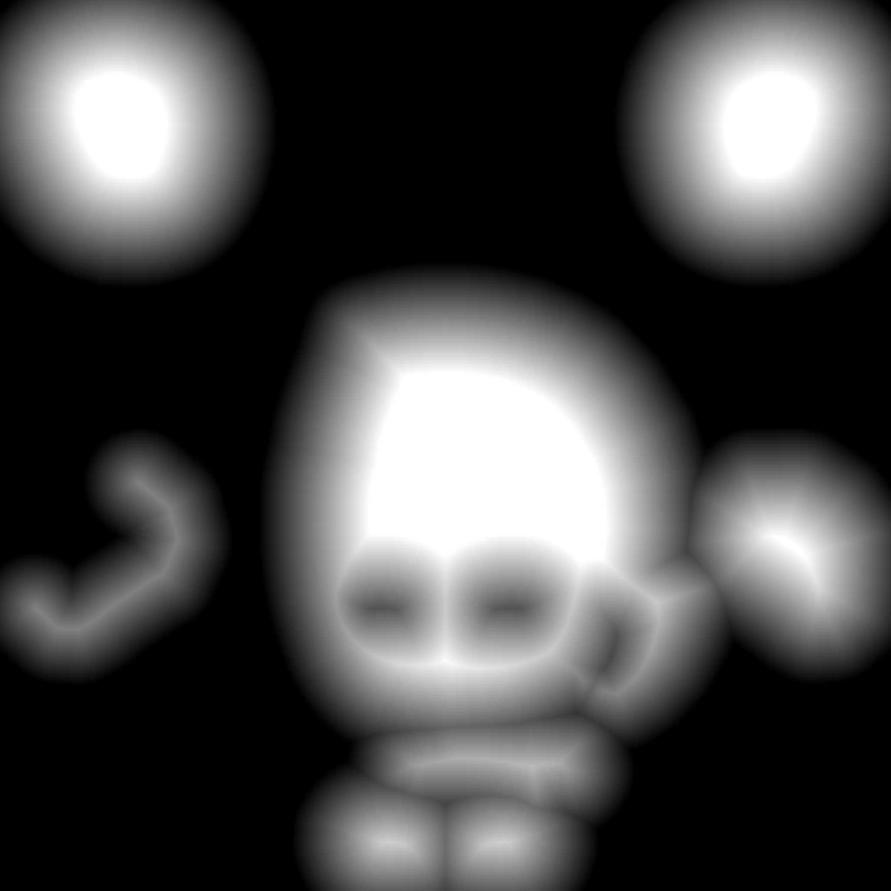
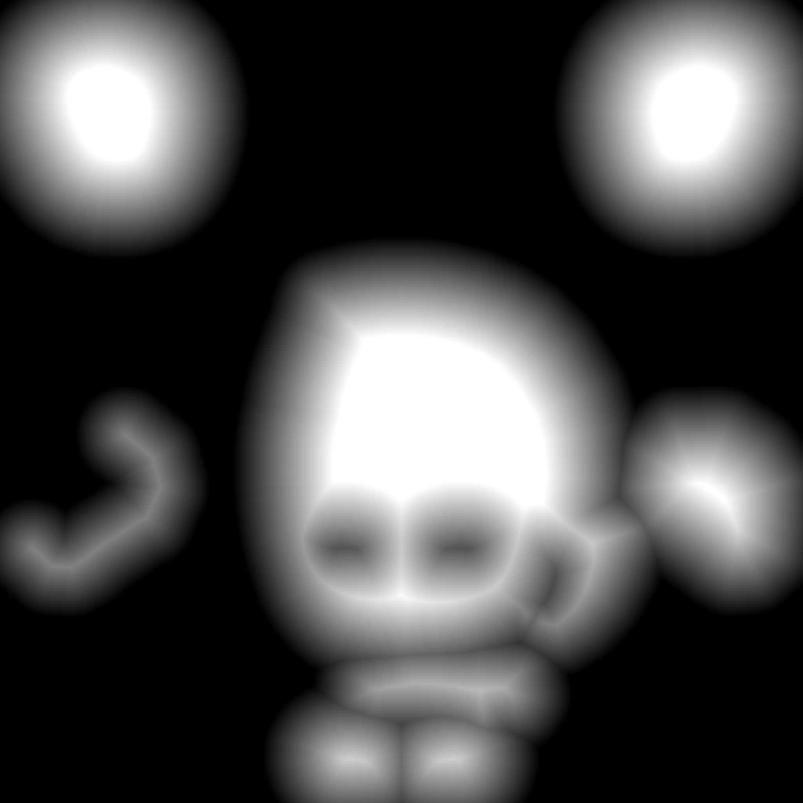
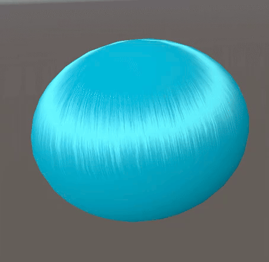
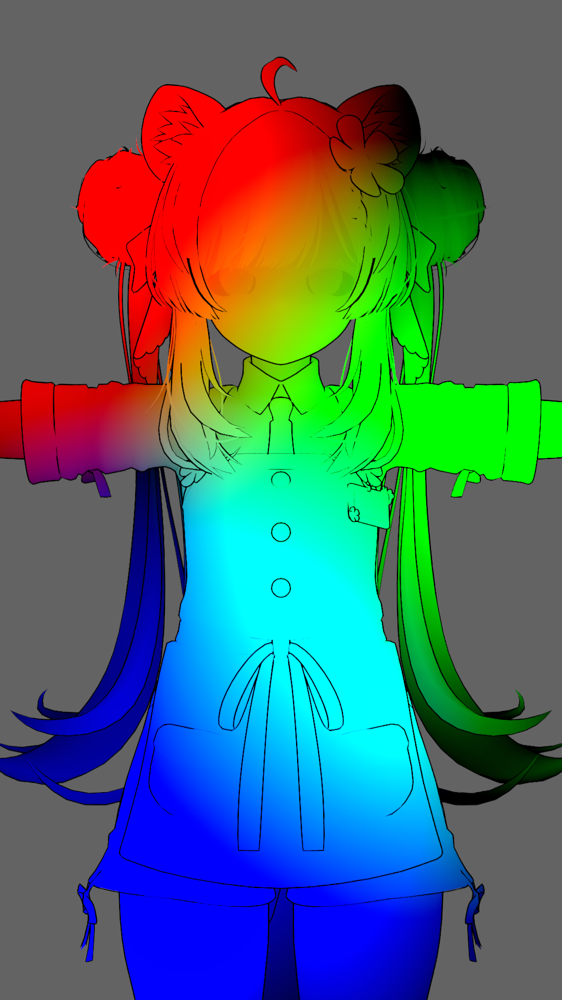

Diffuse
셰이더를 생성하고 기본적인 텍스쳐를 매핑합니다.

Normal
Normal Map을 매핑합니다.
Tangent Space에서 World Space로 변환하기 위한 3개의 Vector는 모두 월드 공간에서 정의된 Vector입니다. 이 Vector들을 기반으로 3x3 행렬을 구성합니다.
구체적으로, 이 변환행렬은 다음과 같습니다.
$$ M = \begin{bmatrix}
\text{Tangent}_x & \text{Bitangent}_x & \text{Normal}_x \\
\text{Tangent}_y & \text{Bitangent}_y & \text{Normal}_y \\
\text{Tangent}_z & \text{Bitangent}_z & \text{Normal}_z
\end{bmatrix} $$
Normal Map은 기본적으로 Tangent Space에서 정의됩니다. 이 Vector를 World Space로 변환하기 위해 다음과 같은 계산을 수행해 normalWS을 얻습니다.
$$ \text{normalWS} = M \times \text{bump} $$
Shadow
Diffuse Coloring의 기본인 Shadow 계산입니다.
Lighting을 하기 위해 먼저 Normal과 Light를 내적하는 속칭 \( \text{NdotL} \) 연산을 먼저 수행합니다.
연산으로 얻은 \( \cos \)값 자체가 Lambert 라이팅입니다.
이 Lambart는 \( \left[-1 \sim 1\right] \) 범위를 가지고 있으므로, 문제가 생길 수 있는 음수 값과 음영의 급격한 변화를 방지하기 위해 Half-Lambert 공식을 사용합니다.


Half-Lambert는 \( \text{NdotL} \times 0.5 + 0.5\) 공식으로 계산됩니다. 이 공식은 \( \left[-1 \sim 1\right] \) 범위를 \( \left[0 \sim 1\right] \) 범위로 만들어 줍니다.
smoothstep은 Hermite 보간으로 음영의 경계를 부드럽게 계산합니다.
현재 계산에서 _ShadowSmooth가 증가되면 음영이 전진하면서 보간됩니다.
기존 음영이 후퇴하면서 전진 방향으로 Smooth 효과를 내고싶다면, 다음과 같이 계산을 수정합니다.
Ramp
Diffuse Coloring의 다른 방법인 Ramp 계산입니다.
HalfLambert로 게산한 Shadow 영역을 Ramp Texture로 샘플링합니다.
\( V \)값의 \( 0.5 \)는 Ramp 맵의 Y축 중심을 샘플링 한다는 의미입니다. HalfLambart 값 범위가 \( \left[0 \sim 1\right] \)이므로 Ramp 맵의 X축 왼쪽부터 오른쪽까지 이 Lambert 계수 값으로 샘플링합니다.
예로 Genshin Impact에서 사용하는 Ramp Map의 경우 상단 5줄은 낮 환경에서 샘플링 하고, 하단 5줄은 밤 환경에서 샘플링 하는 방식으로 Y축 값의 따라 재질 별 다른 색상 그라데이션을 샘플링 합니다.
Face Shadow
얼굴에 드리우는 그림자가 제대로 표시되기 위한 방법입니다.


카툰 렌더링의 얼굴 그림자를 계산할 때 두 가지 주요 방법이 있습니다. 먼저 얼굴 Mesh의 법선을 수정하는 방식입니다.
비단 얼굴 부분에만 사용하는 것이 아니라 법선의 각도 수정은 기타 다른 Mesh의 면 정리에도 필요한 수단입니다.
아래 그림은 구형의 법선을 얼굴 Mesh에 전달하는 과정입니다.
이 방식은 작업이 매우 간단합니다. 하지만 그림자가 단순한 구형에 불과하여, 표현하고자 하는 효과가 비교적 제한적입니다.
다른 방법은 SDF 입니다. 일반적으로 글꼴 렌더링에 사용되지만 거리 필드를 사용하여 그림자를 기록한 다음 광원의 방향에 따라 해당 그림자 모양을 추출하는 방식입니다.

이 방법의 이점은 그림자 모양을 완전히 자유롭게 정의할 수 있습니다. 눈 밑이나 코 등의 그림자 모양도 손쉽게 표현하면서 동시에 자연스러운 전환이 가능합니다.
 

위 사진은 얼굴 정면에서 조명 각도 \( 180^\circ, 157.5^\circ, 135^\circ, 112.5^\circ, 90^\circ, 67.5^\circ, 45^\circ, 22.5^\circ, 0^\circ \)에 해당하는 그림자를 그리고 거리 필드를 생성한 결과입니다.
스무딩된 이미지의 픽셀별 합을 그림자 맵의 갯수로 나누어 최종 SDF 맵을 생성합니다.
계산 방식은 간단합니다. SDF 맵은 한 방향만 기록하므로 \( \vec{V}_{right} \cdot \vec{V}_{light} \)결과로 왼쪽, 오른쪽 여부를 판단하여 SDF를 뒤집어서 사용합니다.
이후 \( \vec{V}_{front} \cdot \vec{V}_{light} \) 결과로 SDF 맵에서 표시해야 할 임계 값을 구하고 출력합니다.
SDF는 정확한 정보를 유지하기 위해 이미지 압축을 권장하지 않습니다. 또한, Y축 변형에 대한 정보도 제공하지 않습니다. 이에 대한 해결책으로 360 SDF 솔루션을 다룬 글이 있습니다.
Cygames사에서 발표한 방법(영상)으로 SDF 그림자를 그리고 법선 또한 수정하여 광원과 혼합해서 그림자를 표현하는 방법도 있습니다.
해당 영상은 그림자 솔루션 이외에도 좋은 정보를 다수 내포하고 있습니다. 꼭 한번 보시기를 권장드립니다.
Ambient Occlusion
차폐 계산입니다. NPR에서는 그림자 한계 값으로도 불립니다.

AO는 기본적으로 주광 \( + \) 환경광 \( \times \) AOMask로 연산되지만, 여기선 주광에 직접 곱해 사용합니다.

이 AO맵을 사용하여 라인아트를 표현하는 경우도 있습니다.
Specular
비금속과 금속에 대한 하이라이트 계산입니다.
하이라이트를 표시할 때, step 함수를 사용하여 specularMask에서 비금속과 금속 부분을 나누어 처리합니다.
전통적인 Blinn-Phong 셰이딩 모델을 사용하며, 금속 부분은 표현을 위해 Matcap을 추가로 사용합니다.
Specular를 계산할 때, Hair에 비치는 하이라이트를 따로 계산하는 경우가 많습니다.
이때 Mask 맵을 사용하여 하이라이트가 단순히 비춰질 부분을 계산하는 것이 아니라, 하나의 형상으로 계산합니다. Blinn-Phong 기반으로 계산하기 때문에 라이트와 카메라 각도에 따라 더 나은 결과물을 얻을 수 있습니다.

RimLight
후광 효과의 계산입니다. 가장자리에 빛을 가상으로 시뮬레이션합니다.
Fresnel만 사용해도 충분히 RimLight를 표현할 수 있는데, 굳이 다른 방식을 사용해야 하냐는 의문이 생길 수 있습니다.
제가 생각하는 RimLight의 가장 이상적인 형태는, 두께가 균일하고 움직임이 있더라도 오브젝트에 대해 RimLight의 두께가 항상 일정하게 유지되는 것입니다.

캐릭터가 움직일 때, Fresnel로 계산된 RimLight에서 두께가 불균일하게 나타나는 경우가 있습니다.
정지된 상태에서도 Fresnel로 계산된 RimLight가 불균일한 두께로 나타나는 현상을 볼 수 있습니다.
계산이 복잡해 보일 수 있지만, 원리는 간단합니다.
화면 공간에서 Depth 맵을 생성한 후, 각 정점의 위치를 법선 방향으로 일정 거리만큼 오프셋한 뒤에 또 하나의 Depth 맵을 생성합니다.
두 Depth 맵을 비교한 후, 지정된 임계값을 초과하면 그 지점을 RimLight로 판단합니다. 이후 Fresnel을 사용하여 보간합니다.
Outline
외곽선에 대한 계산입니다. 새로운 Pass에서 계산합니다.
일반적으로는 법선 방향으로 정점을 확장하여 외곽선을 표현하지만, 보다 나은 효과를 얻기 위한 3가지 제안사항이 있습니다.
1. 외곽선 두께가 카메라와의 거리와 상관없이 일정하게 유지되도록 합니다.
2. 화면의 종횡비에 따라 외곽선이 변하지 않도록 합니다.
3. 외곽선이 끊어지는 문제를 수정합니다.
외곽선을 계산할 때 가장 큰 문제 중 하나는 하드 엣지에서 외곽선이 끊어지는 현상입니다.
이 문제를 해결하기 위해 런타임에 SmoothNormal을 계산하는 스크립트를 사용할 수 있습니다.
하지만 이 솔루션은 Unity를 종료하거나 씬이 리로드될 때마다 다시 계산해야 하는 문제가 있습니다.
그래서 저는 Toony Colors Pro 2에 내장된 플러그인을 사용하는 것을 선호합니다.
이 플러그인을 사용하면 Mesh의 법선 정보를 스무딩하여 Tangent에 저장할 수 있습니다. 따라서 위 계산 코드에서도 tangentWS를 사용해 계산했습니다.
머리카락 끝 부분 외곽선 두께 조절과 같은 세밀한 부분의 계산을 쉽게 하기 위해 Vertex Color를 함께 사용합니다.
후처리를 통해 외곽선을 검출하는 방법도 있지만, 다중 레이어 처리가 필요한 경우 복잡해지기 때문에 제가 선호하는 방식은 아닙니다.
Cast/Receive Shadow
그림자를 그리고 받는 계산입니다.
Cast Shadow는 단순히 ShadowCaster Pass를 추가하면 됩니다.
이제 MainLight의 Bias와 Distance 등의 영향을 받게 됩니다.
Additional Light
추가 조명에 대한 계산입니다.

Forward+ 환경에서는 조명이 Cluster에 저장되므로, 특수한 루프인 LIGHT_LOOP를 사용합니다.
Forward 환경에서는 pixelLightCount를 기준으로 루프를 돌고, Forward+ 환경에서는 InputData를 기준으로 루프가 실행됩니다.
추가 조명을 계산할 때 고려해야 할 사항이 매우 많습니다. 각 조명이 서로 그림자 감쇠값과 그림자 마스크에 영향을 미치는지, 기본 조명 색상이 어떻게 혼합되는지, 그리고 어느 부분까지 함께 혼합되어야 하는지 등 요구사항에 맞게 신중하게 처리해야 합니다.
Fake Shadow
머리카락 그림자 투영에 대해 가짜로 표현하는 계산입니다.
원리는 매우 간단합니다. 먼저 머리카락 모양의 단색 버퍼를 만든 후, Stencil 테스트를 통과한 객체에 이 버퍼를 추가로 그려주면 됩니다.
이를 구현하기 위해 URP의 기능 중 하나인 RenderFeature를 사용합니다.
기존의 라이트로 생성된 그림자를 사용하지 않고, FakeShadow 기법과 같은 트릭을 사용하는 이유가 있습니다.
머리카락과 얼굴 사이의 공간이 매우 좁기 때문에, ShadowMap으로 구현하려고 하면 ShadowMap의 정밀도가 비현실적으로 높아야 하는 문제가 발생합니다.
이 효과는 단순히 버퍼를 하나 더 그리는 방식이기 때문에, 다양한 각도와 머리카락의 형태 등에 많은 영향을 받을 수밖에 없습니다.
그래서 많은 사람들이 ShadowMap의 정밀도 문제를 피하기 위해 다양한 기법을 사용해 캐릭터의 그림자를 최상의 퀄리티로 구현하려고 합니다.
Unite2018에서 소개된 'Honkai Impact 3rd'는 캐릭터별로 별도의 그림자 맵을 렌더링하고 화면에 구현하는 기능을 발표했습니다.
발표자인 'He Jia'는 캐릭터의 바운딩 박스 경계를 기반으로 기술을 구현한다고 설명했습니다.
감사하게도 발표 내용을 바탕으로 기능을 구현한 글이 있습니다. 저는 주로 이 방법에 다른 기법들을 더해 그림자를 표시합니다.
또한 Unity는 객체별 Shadow Map을 지원하지 않기 때문에, Decal Projector에서 사용되는 기술을 응용하여 객체별 그림자 맵을 생성하는 PerObjectShadow 기법을 구현한 사례도 있습니다.